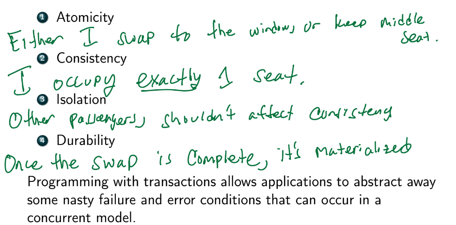
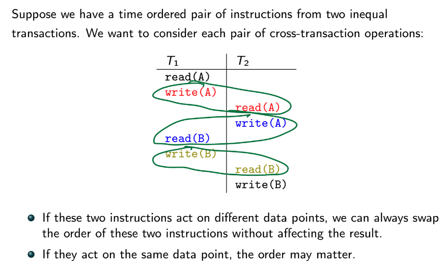
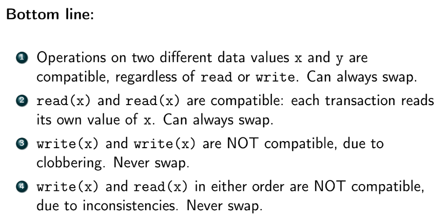

- 
- let S1 be old seat and S2 be new seat
- want to mark S1 as false and S2 as true
-
Transaction read(S1) S1 = false write(S1) read(S2) S2 = true write(S2) commit


- no interleaving operations
- guarantees consistency, but little concurrency
- concurency reduces waiting time => improves throughput
- if a concurrent schedule can be converted to one that is serial, the schedule is serializable
- guarantees consistency!
- not serializable means MAY be inconsistent (not ALWAYS inconsistent)
- 
- 